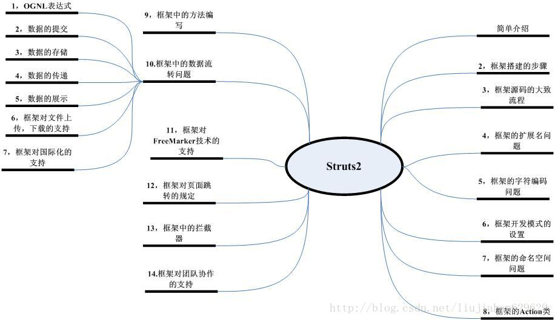
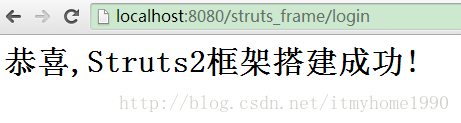

Struts2(一) Struts部署搭建
总体介绍:
SSH (Struts + Spring + Hibernate) 三大框架
较流行的开源框架：
- 关注数据流程的MVC框架（Struts2，WebWork，Spring MVC···）
- 关注数据关系的容器框架（Spring，Guice···）
- 关注数据操作的持久层框架（Hibernate，IBatis···）
引自 刘佳翰博客 的一段话：
所谓框架么，其实就像我们盖房子一样，需要先搭建支架，然后再进行添砖加瓦，使之达到完美。而在软件开发中，框架也是一样的：就是将通用的代码进行封装，使我们可以重复利用，达到了高效开发的效果。当然既然已经搭建
好的框架，用到我们的系统中，我们就需要学习它，怎么使我们自己独有的代码和框架进行完美的结合。因为大家都在用这些优秀的框架，所以框架的学习，其实就是框架规范的学习。有了规范，有个约束，有了统一，才能更加有利于
合作的开发。
Struts2知识总括

Struts2框架改善的地方：
a. 核心基于 Filter
b. 流程可以动态扩展
c. 多例创建对象
d. 支持多种视图展现技术（JSP,Freemarker，Volicity）
开始搭建
1、引入相关jar包到web的lib目录下：
commons-fileupload-1.3.1.jar
commons-io-2.2.jar
commons-lang3-3.1.jar
commons-logging-1.1.3.jar
freemarker-2.3.19.jar
javassist-3.11.0.GA.jar
ognl-3.0.6.jar
struts2-core-2.3.16.3.jar
xwork-core-2.3.16.3.jar
2、在web.xml中添加Struts过滤器：
1
2
3
4
5
6
7
8
| <filter>
<filter-name>struts2</filter-name>
<filter-class>org.apache.struts2.dispatcher.FilterDispatcher</filter-class>
</filter>
<filter-mapping>
<filter-name>struts2</filter-name>
<url-pattern>/*</url-pattern>
</filter-mapping>
|
3、在 src 目录下添加 struts.xml 问件
1
2
3
4
5
6
7
8
9
10
| <!DOCTYPE struts PUBLIC
"-//Apache Software Foundation//DTD Struts Configuration 2.0//EN"
"http://struts.apache.org/dtds/struts-2.0.dtd">
<struts>
<package name="build" extends="struts-default">
<action name="login" method="login" class="com.itmyhome.Login">
<result name="success">index.jsp</result>
</action>
</package>
</struts>
|
4、编写Login.java
1
2
3
4
5
6
7
8
9
10
| package com.luson;
public class Login
{
public String login()
{
System.out.println("***已进入***");
return "success";
}
}
|
5、index.jsp示例文件
1
2
3
| <body>
<h1>恭喜,Struts2框架搭建成功!</h1>
</body>
|
最后，运行项目并在浏览器输入 http://localhost:8080/struts_frame/login
若成功则显示如下页面：

本文参考自 刘佳翰的博客 和 麦田的博客